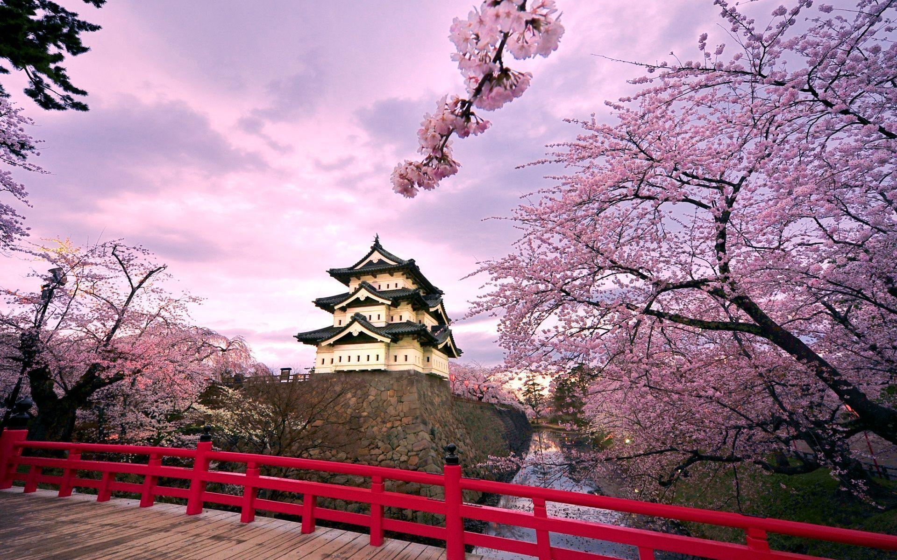
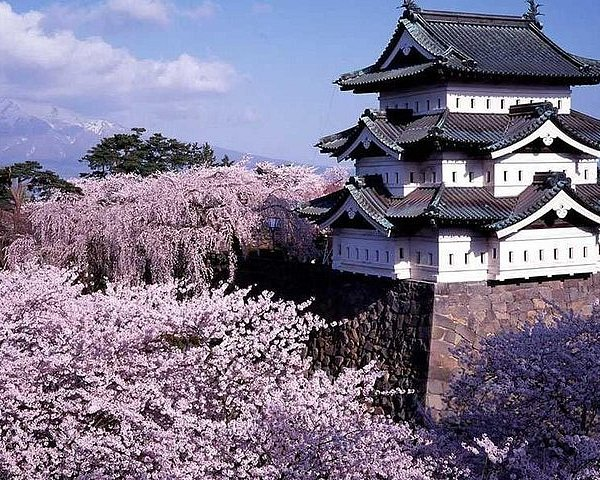
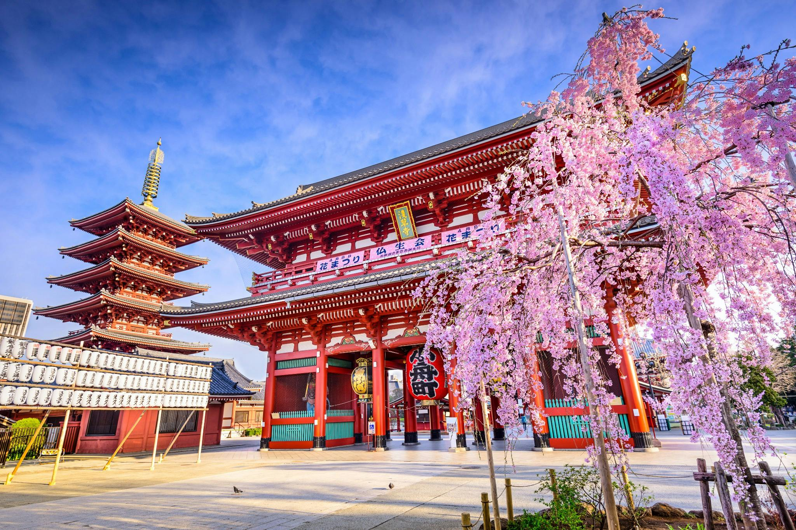

A estética japonesa combina simplicidade, natureza e simbolismo. Dos padrões tradicionais aos templos vermelhos e jardins zen, a paleta japonesa reflete equilíbrio, serenidade e profundidade cultural.


